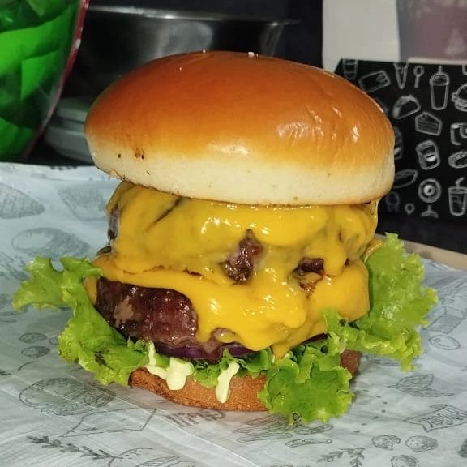

Hambúrgueres Artesanais
Valorizamos a qualidade em cada hambúrguer. Com base em pesquisas e aprovações da comunidade, usamos ingredientes frescos e de alta qualidade, refletindo nossa dedicação ao sabor autêntico e à excelência artesanal. Venha saborear a diferença, onde a qualidade é prioridade.

Ação social
Destinamos parte dos lucros para comprar rações para animais necessitados e oferecemos aos clientes a oportunidade de fazer doações adicionais. Cada contribuição ajuda a melhorar a vida dos animais de estimação da comunidade. Junte-se a nós para fazer a diferença!
SESSÃO DE DEPOIMENTOS DOS CLIENTES
Aqui iremos colocar os depoimentos de clientes, prints, fotos de amigos provando os lanches, postagens, etc... Isso ajudará promover a marca e irá gerar interesse